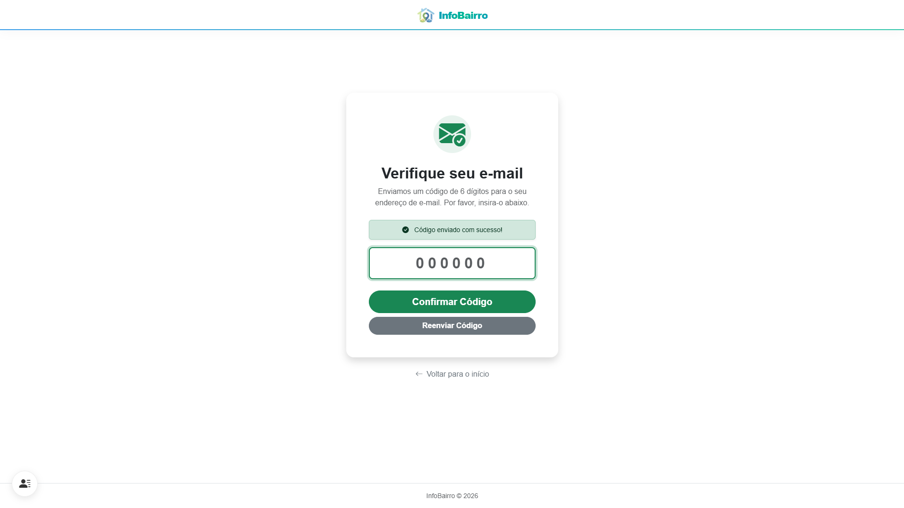
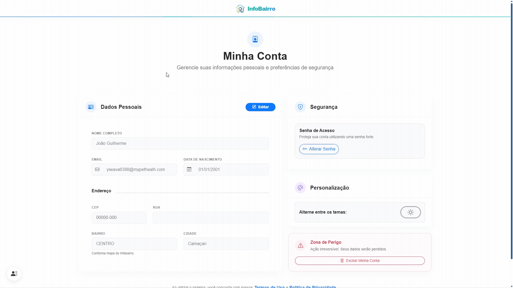
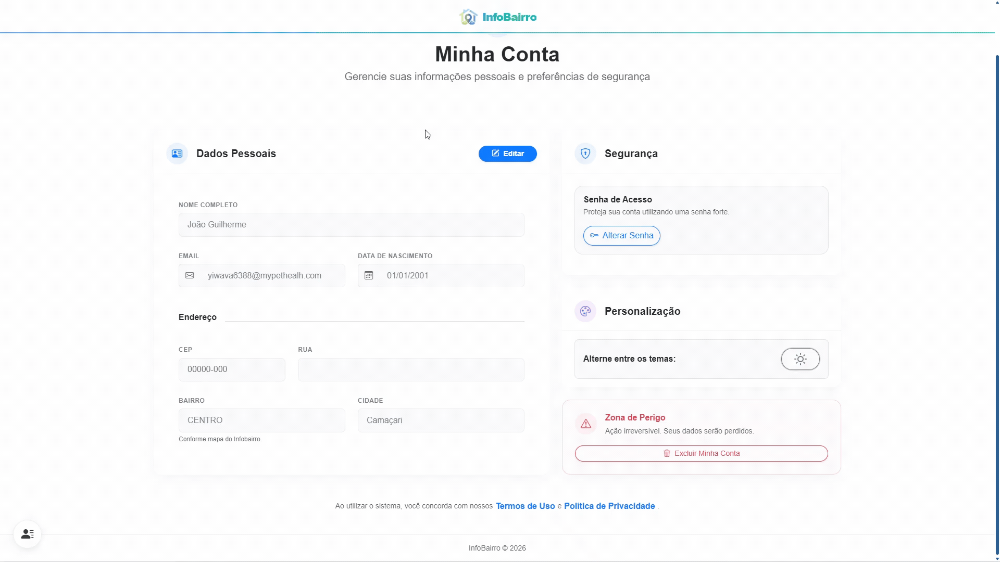
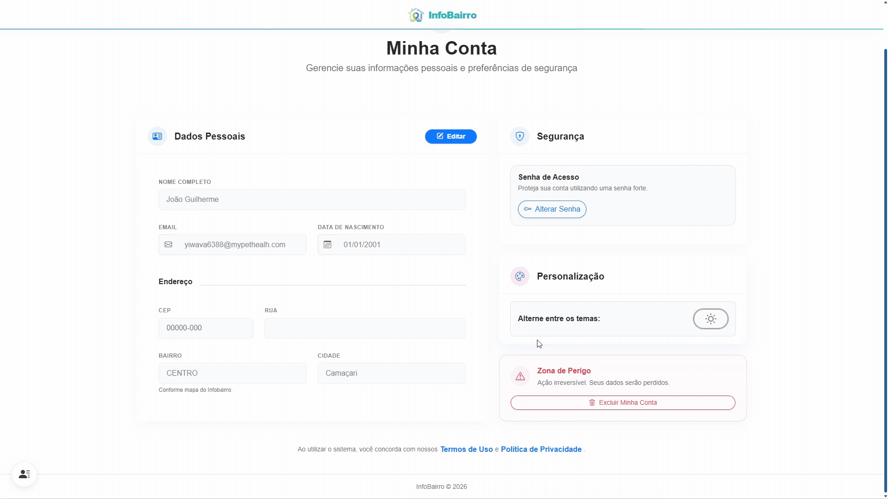
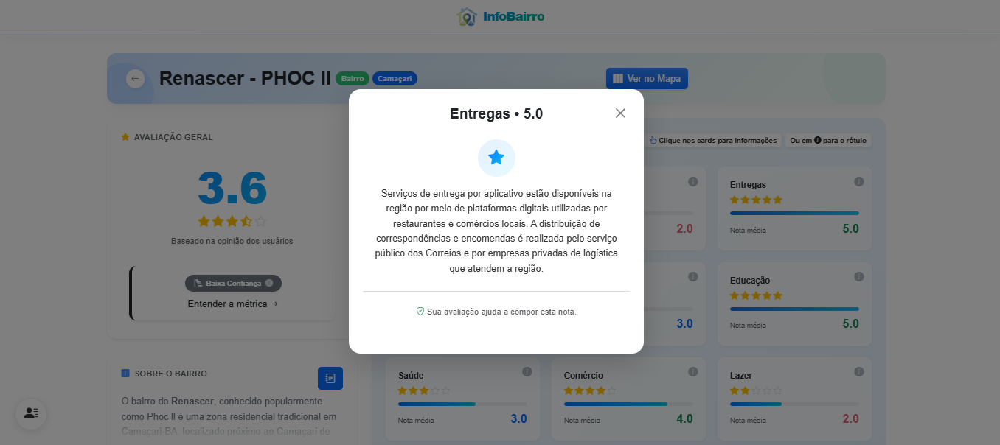
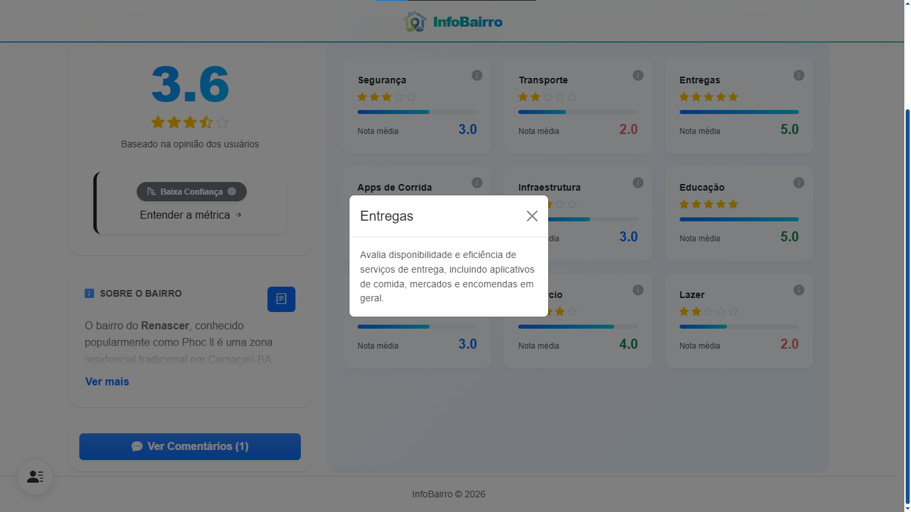
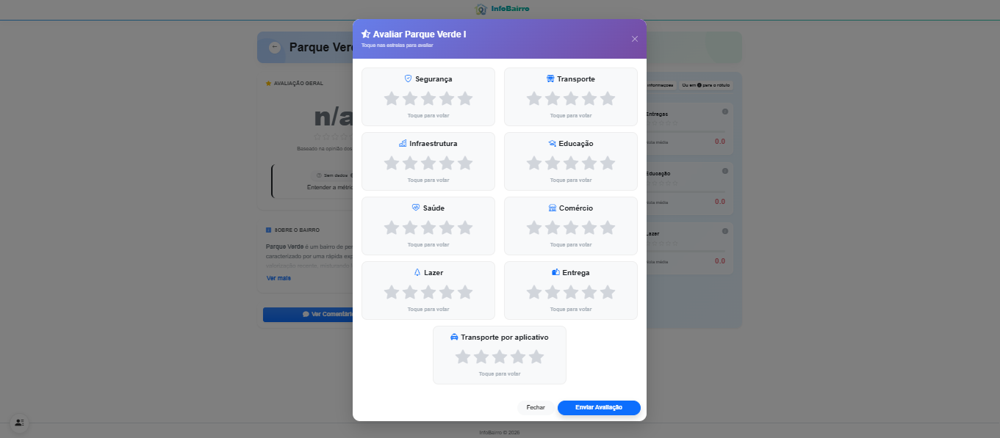
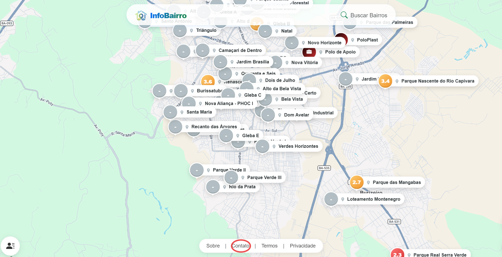
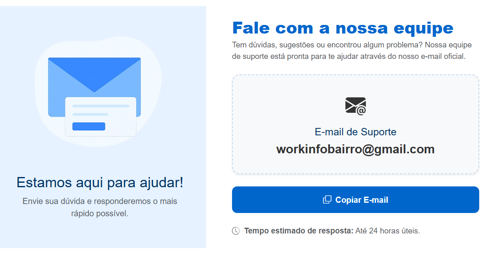

Manual do Usuário
Tudo o que você precisa saber para dominar nossa plataforma.
Realizando Cadastro
Realizando Cadastro.

Passo a passo:
- Acesse a pagina incial do Infobairro.
- Click no icone de menu na canto inferior esquerdo.
- Selecione a opção "Cadastro".

Passo a passo:
- Preencha com os seus dados pessoas os campos "Nome Completo", "Email", "Data de nascimento".
- Infome o seu CEP ou selecione a Cidade e o bairro onde reside.
- Crie uma senha conforme os requisitos (Mínimo de 6 caracteres, Uma letra minúscula, Uma letra maiúscula, Um número, Um caractere especial (#, $, etc.)).
- Clique em "Finalizar Cadastro".

Passo a passo:
- Será enviado um código de 6 dígitos para o seu endereço de e-mail, informe no campo disponivel.
- Caso não tenha recebido o codigo clique na opção "Reenviar Código". Lembre-se sempre de checkar a caixa de Spam.
- Com o campo preenchido corretamente clique em "Confirmar Codigo"
Gerenciando o seu Perfil

Passo a passo:
- Acesse a pagina incial do Infobairro.
- Clique no icone de menu na canto inferior esquerdo.
- Selecione a opção "Configurações".
Editando dados pessoais

Passo a passo:
- Em dados pessoas clique no botão "Editar"
- Altere o campo desejado.
- Clique em "Salvar Alterações"
Alteração de Senha

Passo a passo:
- Em Segurança clique no botão "Alterar Senha".
- Informe sua senha atual.
- Crie sua nova senha conforme os requisitos (Mínimo de 6 caracteres, Uma letra minúscula, Uma letra maiúscula, Um número, Um caractere especial (#, $, etc.)).
Exclusão de conta

Passo a passo:
- Em Zona de perigo clique no botão "Excluir Conta".
- Confirme a exclusão no botão "Sim, Excluir tudo"
Navegação no Sistema
Explore o mapa interativo e acesse as principais funcionalidades da plataforma com facilidade.

Explorando o Mapa: Nossa interface foi desenhada para ser totalmente interativa. Navegue livremente pelas regiões e, ao selecionar o marcador (pin) de qualquer bairro no mapa, uma janela de pré-visualização surgirá na parte inferior da tela, exibindo um resumo rápido com as principais estatísticas locais.
Seu Perfil: Ao clicar no ícone no menu, você acessa seu painel pessoal. Lá é possível gerenciar as configurações da sua conta, revisar todos os comentários que você já publicou na plataforma e encerrar a sua sessão de forma segura.
Uso de Filtros
Refine sua busca e encontre exatamente a região que atende às suas necessidades.

Procurando por algo específico? Clique no ícone de lupa para abrir a nossa gaveta de filtros inteligentes. O sistema oferece múltiplas formas de refinar sua pesquisa:
- Busca Direta: Digite o nome exato do bairro que deseja analisar.
- Filtro por Cidade: Delimite o mapa para mostrar apenas os bairros de um município específico.
- Categorias de Qualidade: Onde o sistema realmente brilha! Filtre bairros que possuem as melhores notas em categorias cruciais para você, como Infraestrutura, Segurança, Lazer e Transporte.
Cards de Informação
Mergulhe em dados aprofundados sobre cada região através de relatórios segmentados.

Ao abrir os detalhes de um bairro, as informações não são jogadas todas de uma vez. Elas são organizadas em Cards Temáticos que funcionam como atalhos visuais.
Clique em qualquer um dos cards para expandir e ler informações detalhadas sobre aquela estatística correspondente. Por exemplo: ao selecionar o card de “Entrega”, o sistema exibirá gráficos, dados de acessibilidade e avaliações sobre como funcionam os serviços de delivery, transportadoras e correios naquelas ruas específicas.

Entenda as Métricas
Para garantir que você compreenda exatamente como cada nota é calculada, disponibilizamos guias explicativos em todos os indicadores. Ao clicar no ícone de ajuda localizado no canto de cada card, um painel informativo será exibido com a definição detalhada daquela categoria.
Avaliação Comunitária
Sua voz tem poder! Compartilhe sua experiência real e ajude a construir um mapa mais fiel à realidade de cada região.

Como contribuir?
Acreditamos que ninguém conhece melhor um lugar do que quem vive nele. Por isso, nossa plataforma libera um canal de feedback exclusivo para moradores.
- Reconhecimento Automático: O sistema identifica se o bairro visualizado é o mesmo que você cadastrou no seu perfil.
- Acesso Rápido: Se você for um morador local, o botão aparecerá automaticamente.
- Impacto Real: Suas notas de 1 a 5 alimentam os gráficos de infraestrutura, segurança e lazer que todos os outros usuários consultam.
Teste a Interação abaixo:
Experimente passar o mouse ou tocar nas estrelas para ver o sistema em ação.Avaliação dos bairros
Veja como colaborar com outros usuários e participar das notas.
Como avaliar um bairro:
- Selecione o bairro em que você reside.
- Clique no card da categoria desejada (ex: Segurança, Saúde, Lazer)
- Clique nas estrelas correspondentes para registrar sua nota de 1 a 5
Interação
Veja como colaborar com outros usuários e participar da aba comentarios.
Como compartilhar sua experiência:
- Escreva seu comentário sobre o bairro, sendo morador ou visitante (informação será mostrada para quem vizualizar seu comentário)
- Seja honesto e compartilhe apenas fatos verdadeiros
- Mantenha o respeito e a empatia: evite palavras de baixo calão e ofensas
- Clique no botão para publicar sua contribuição à comunidade
Apresentação
Veja como acessar a tela de apresentação.
Como acessar a tela de apresentação das avaliações gerais:
- Na página principal do InfoBairro, selecione o bairro escolhido clicando em cima do PIN colorido onde contém a numeração de nota geral
- Ao clicar, irá aparecer um card na parte inferior da tela apresentando um resumo das avaliações
- Clique no botão
- O usuário será levado a página de Tela de Apresentação, onde mostra os cards das avaliações específicas (Segurança, Saúde, Educação...), A aba de comentários sobre a localidade ; contendo todas as informações sucintas e atualizadas sobre o bairro.
Benefícios Premium
Dashboard Avançado
Acesse métricas exclusivas, KPIs em tempo real e relatórios exportáveis que só o plano Premium oferece.
Suporte e Segurança
Sua segurança é nossa prioridade. Entenda as proteções e como pedir ajuda.
Como contatar o nosso suporte:
- Clique na aba de Contato
- Copie o email de suporte
- Envie um email detalhando seu problema ou dúvida


Boas Práticas:
- Nunca compartilhe sua senha com terceiros.
- Ative a Autenticação de Dois Fatores (2FA) nas configurações.
- Em caso de dúvidas, nosso chat funciona 24/7.
Como tratamos seus dados sob a LGPD.
1. Coleta de Dados
O InfoBairro poderá coletar os seguintes dados:
- Dados cadastrais fornecidos voluntariamente pelo usuário (quando aplicável);
- Dados de uso e navegação dentro da plataforma;
- Dados de localização: obtidos via navegador ou dispositivo para identificar se o usuário é morador ou visitante de um bairro;
- Informações técnicas: endereço IP, tipo de navegador e modelo do dispositivo.
2. Uso dos dados de localização
Os dados de localização são utilizados exclusivamente para:
- Identificar a relação do usuário com o bairro avaliado (morador ou visitante);
- Melhorar a contextualização das avaliações e comentários;
- Aprimorar a experiência do usuário e a precisão das informações exibidas.
Importante: O InfoBairro não utiliza dados de localização para rastreamento contínuo, nem para fins comerciais ou publicitários invasivos.
3. Compartilhamento de Dados
O compartilhamento de dados ocorre de forma limitada:
- Prestadores de serviços: Como o Google Maps, estritamente para funcionalidades de mapa e geolocalização;
- Autoridades públicas: Apenas quando exigido por lei ou ordem judicial;
- Não há comercialização ou venda de dados pessoais para terceiros.
4. Armazenamento e Segurança
Os dados são armazenados em ambientes seguros, protegidos por medidas técnicas contra acessos não autorizados e vazamentos. Eles são mantidos apenas pelo tempo necessário para cumprir as finalidades descritas nesta política.
5. Direitos do Usuário
Nos termos da lei, o usuário tem direito a:
- Confirmar a existência de tratamento de seus dados;
- Acessar, corrigir ou atualizar suas informações pessoais;
- Solicitar a exclusão ou anonimização de dados (quando aplicável);
- Revogar consentimentos previamente concedidos.
As solicitações podem ser feitas através dos canais oficiais de contato do InfoBairro.
6. Serviços de Terceiros e Atualizações
A utilização de mapas está sujeita às políticas do Google. Recomendamos a leitura dos termos desses fornecedores.
Esta Política pode ser atualizada periodicamente. Ao continuar utilizando o InfoBairro, o usuário declara estar ciente da coleta e uso de seus dados conforme aqui descrito.
1. Sobre os Termos de Uso
Antes de utilizar a plataforma InfoBairro, é importante compreender que o acesso ao site implica na leitura e concordância com os Termos de Uso da plataforma.
Esses termos existem para garantir que o uso das informações disponibilizadas seja feito de forma responsável, ética e dentro da legislação vigente.
Caso o usuário não concorde com qualquer condição apresentada nos termos, recomenda-se que não utilize a plataforma.
2. Finalidade da Plataforma
O InfoBairro foi criado com o objetivo de reunir e disponibilizar informações públicas sobre bairros de forma organizada e acessível.
As informações presentes na plataforma podem ter origem em:
- Bases de dados públicas e portais governamentais
- Estudos e relatórios técnicos
- Levantamentos estatísticos
- Pesquisas populares e relatos comunitários
- Outras fontes públicas disponíveis
O propósito do site é facilitar o acesso a informações, permitindo que os usuários conheçam melhor diferentes regiões.
3. Uso das Informações
É importante entender que todas as informações apresentadas na plataforma possuem caráter exclusivamente informativo. Isso significa que:
- O InfoBairro não emite opiniões ou recomendações sobre bairros.
- O site não classifica bairros como melhores ou piores para morar ou investir.
- As informações não substituem análises pessoais ou profissionais.
4. Atualização dos Dados
Algumas informações disponíveis na plataforma podem sofrer alterações ao longo do tempo.
Isso acontece porque muitos dados são provenientes de bases públicas que podem ser atualizadas periodicamente.
Por esse motivo:
- Algumas informações podem estar desatualizadas ou incompletas.
- O InfoBairro não garante precisão absoluta para finalidades específicas.
Sempre que possível, recomenda-se consultar fontes oficiais complementares.
5. Serviços de Terceiros
A plataforma pode utilizar serviços externos, como sistemas de mapas e geolocalização.
Por exemplo, a integração com o Google Maps permite visualizar a localização de bairros e pontos de interesse.
Esses serviços são fornecidos por terceiros e podem possuir regras próprias de uso, independentes da plataforma InfoBairro.
6. Responsabilidade do Usuário
Ao utilizar a plataforma, o usuário concorda em utilizar as informações de forma responsável.
O InfoBairro não se responsabiliza por:
- Decisões tomadas com base nas informações apresentadas
- Interpretações pessoais dos dados
- Danos ou prejuízos decorrentes do uso das informações
7. Uso Indevido das Informações
Para manter um ambiente informativo e respeitoso, é proibido utilizar os dados da plataforma para:
- Atividades ilegais
- Difamação de bairros ou comunidades
- Discurso discriminatório
- Manipulação de informações para enganar terceiros
8. Conteúdo Publicado por Usuários
Caso a plataforma permita a participação de usuários (comentários, avaliações ou relatos), algumas regras devem ser seguidas.
Responsabilidade pelo conteúdo
Mesmo que a publicação seja anônima, o usuário continua sendo legalmente responsável pelo que publica.
Conteúdos proibidos
Não é permitido publicar:
- Propaganda ou publicidade não autorizada
- Dados pessoais (telefone, endereço, e-mail)
- Conteúdos ofensivos, discriminatórios ou que incitem violência
Moderação
A plataforma pode remover conteúdos e bloquear usuários que violem as regras de uso.
9. Direitos Autorais
A estrutura da plataforma, textos autorais, identidade visual e marca InfoBairro são protegidos por direitos de propriedade intelectual.
A reprodução ou exploração comercial desse conteúdo não é permitida sem autorização.
10. Atualizações dos Termos
Os Termos de Uso podem ser atualizados a qualquer momento para melhorar a plataforma ou adequá-la à legislação.
O uso contínuo do site após alterações significa que o usuário concorda com as novas condições.
Diretrizes de comportamento e ética.
1. Objetivo da Comunidade
O espaço de avaliações e comentários foi criado para que usuários compartilhem experiências, percepções e informações gerais sobre bairros, sempre de forma responsável e respeitosa.
2. Anonimato com Responsabilidade
Os comentários são publicados de forma anônima; O anonimato não deve ser interpretado como permissão para abusos; Cada usuário é responsável pelo conteúdo que publica, inclusive perante a legislação vigente.
3. O Que É Permitido
São bem-vindos comentários que:
- Relatem experiências pessoais de forma genérica e respeitosa;
- Descrevam características do bairro (infraestrutura, transporte, comércio, lazer, etc.);
- Contribuam para o entendimento coletivo, sem ataques ou generalizações ofensivas;
- Se mantenham dentro de um tom informativo e construtivo.
4. O Que Não É Permitido
Não são permitidos conteúdos que contenham:
- Divulgação de serviços, anúncios, ofertas ou autopromoção;
- Telefones, endereços, e-mails, links de contato ou redes sociais;
- Dados pessoais próprios ou de terceiros;
- Ofensas, xingamentos, ameaças ou ataques pessoais;
- Conteúdo difamatório, calunioso ou que atribua crimes sem comprovação;
- Discurso de ódio, discriminação, preconceito ou incitação à violência;
- Informações falsas, sensacionalistas ou deliberadamente enganosas.
5. Moderação e Medidas Disciplinares
Para manter a qualidade, o InfoBairro poderá realizar moderação manual ou automática e aplicar:
- Remoção total ou parcial do comentário;
- Advertência, suspensão temporária ou bloqueio permanente da conta em casos graves ou reincidência.
6. Neutralidade do InfoBairro
As opiniões expressas representam exclusivamente a visão de quem as publicou, não refletindo a posição oficial ou recomendações do InfoBairro.
7. Atualizações
Esta política pode ser atualizada a qualquer momento. Ao participar, o usuário declara estar ciente e concorda em contribuir para um ambiente seguro e equilibrado.